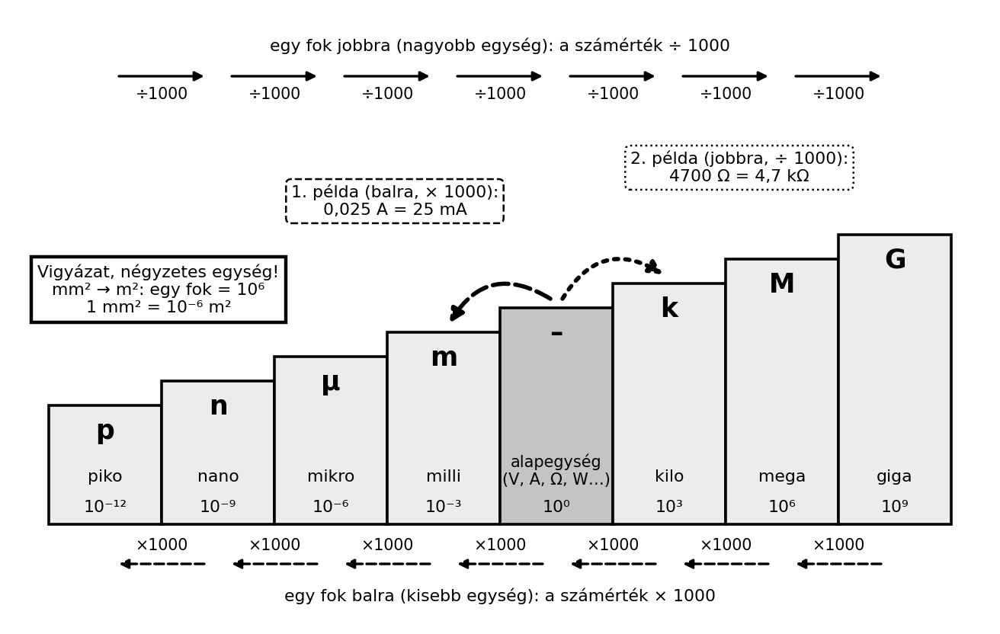

Egy villanyszerelő az elosztóban egy régi kondenzátort cserél. A
dobozon 2,2 µF szerepel, ő azonban 2,2 mF-et
rak be, mert a millifarad és a mikrofarad jele hasonlít. Az áramkör
szűrése elhangolódik, a készülék hibásan működik, és a hibakeresés
órákat emészt fel. Hasonló példa: valaki 10 kW-ot ír
10k W alakban, vagy a nullákat nem csoportosítja, és a
tizedesvessző egy rossz helyre kerül. A munkánk számértékekből és
mértékegységekből áll: ha a kettő nem illik össze, a számítás értéket
nem ad, vagy ami rosszabb, hibás következtetést rejt.
Ez az alfejezet nem matematikai magolás. A cél az, hogy a számítási lépésekben mindig ellenőrizhető legyen: a mennyiség numerikus értéke, az egysége és a nagyságrendje összhangban van-e. Ezt a mértékegység-ellenőrzést minden későbbi fejezetben – például az Ohm törvénye, villamos munka, teljesítmény és hatásfok számításaiban – használni fogjuk.
Az SI-rendszerben a fizikai mennyiségek nagy része túl kicsi vagy túl nagy ahhoz, hogy mindig az alapegységet írjuk ki. Ezért az alapegység elé olyan előtagot teszünk, amely a tíz valamilyen hatványával szoroz. A gyakori villamosipari előtagok:
| Előtag | Jele | Szorzó | Példa |
|---|---|---|---|
| piko | p | ||
| nano | n | ||
| mikro | µ | ||
| milli | m | ||
| kilo | k | ||
| mega | M | ||
| giga | G |
A táblázatot érdemes úgy megtanulni, hogy a szomszédos előtagok között 1000 a váltószám: milli és mikro között 1000, mikro és nano között 1000, nano és piko között 1000. A kilo és mega, valamint a mega és giga között szintén 1000 a váltószám. A milli és a kilo között ott van az alapegység (m → alapegység → k), ezért ott a váltószám . Ez megkönnyíti a fejben való átváltást.
Az alábbi lépcső ugyanezt a táblázatot rajzolja ki: minden fok ezerszeres váltás. A legfontosabb szabály a nyilak irányában olvasható: ha nagyobb egységre lépsz (jobbra fel), a számérték kisebb lesz (÷ 1000 fokonként); ha kisebb egységre lépsz (balra le), a számérték nagyobb lesz (× 1000 fokonként). A mennyiség maga nem változik, csak a „mérőpálca” mérete.

Ellenőrizd magad az ábrán: hány fokot és milyen irányba lépsz, ha 2,2 µF-ot nF-ra váltasz? (Egy fokot balra, ezért a számérték × 1000: 2200 nF.) A négyzetes egységeknél (mm², m²) vigyázz: ott egy fok a hosszegység ezres váltásának négyzete, vagyis .
A villamos szakmában a legfontosabb SI-alapegységek:
Definíció. A mértékegység egy mérhető mennyiség összehasonlítására szolgáló, rögzített referencia. Az SI mértékegységrendszerben minden mértékegység a fenti alapegységekből és a prefixumokból áll elő. A mennyiségértéket mindig számérték és mértékegység szorzata adja, például .
A villamos mennyiségeknél a leggyakrabban használt származtatott egységek:
Összefüggés.
Ezekben a definíciókban minden egység ugyanazt az egyenletet követi, mint a hozzá tartozó fizikai törvény. Például az ellenállás , ezért az .
Definíció. A prefixum (előtag) a mértékegység elé írt, tíz hatványát jelentő jel. A táblázatban felsorolt előtagok a hivatalos SI-prefixumok; a mikro jele a görög µ betű, amely a magyar gyakorlatban „mikro”-nak ejtendő, és nem szabad összekeverni az m-mel.
Szabály. A számértéket és a mértékegységet mindig
szóköz választja el, kivéve a szögfokot (30°); a
Celsius-fok elé szóköz kell (20 °C): 230 V,
nem 230V; 25 mA, nem 25mA. A
prefixum szorosan a mértékegységhez tartozik: 10 kW, nem
10 k W. A prefixum jele betűnagyságra érzékeny: a
M mega
(),
az m milli
().
A k kilo mindig kisbetű.
A nagy és nagyon kicsi számokat normálalakban vagy mérnöki jelölésben adjuk meg. A normálalak: , ahol . A mérnöki jelölés a normálalak olyan változata, amelyben a kitevő hárommal osztható, az együttható pedig 1 és 1000 közé esik (), például (kilo), (mikro), (mikro). A mérnöki jelölés közvetlenül megfeleltethető a prefixumoknak, ezért a villamosiparban ezt részesítjük előnyben.
A mérések és számítások során az eredményt soha ne adjuk meg több értékes jeggyel, mint amennyit a legpontatlanabb kiindulási adat indokol.
Szabály. Kerekítésnél a hagyományos szabályt alkalmazzuk: ha az elhagyandó első számjegy 0–4, lefelé, ha 5–9, felfelé kerekítünk. A könyvben, ha a feladat mást nem kér, az eredményt három értékes jegyre adjuk meg (például ), és mindig szúrópróbával ellenőrizzük a nagyságrendet.
A zsebszámológép kijelzője sok tizedesjegyet mutathat, de ez nem jelenti azt, hogy az eredmény valóban ilyen pontos. Az éles méréshez használt műszer pontossága határozza meg, mennyi értékes jegy hiteles.
A becslés fontos eszköz: mielőtt kiszámolunk valamit, becsüljük meg a
nagyságrendet. Ha például egy
hálózati feszültségből
áramot kapunk, akkor a teljesítmény nagyságrendje
,
tehát pár wattos fogyasztó. Ha a számológép 2,3 kW-ot adna,
azonnal látnánk a hibát.
Szabály. Egy képletet úgy rendezünk, hogy az egyenlet mindkét oldalán ugyanazt a műveletet végezzük el, amíg a keresett mennyiség egyedül marad; ha a keresett mennyiség négyzeten van, a végén gyököt vonunk.
2200 ÷ ( √3 × 400 × 0,8 × 0,82 ) =, az eredmény
.
Zárójel nélkül (2200 ÷ √3 × 400 × 0,8 × 0,82) a gép csak
-mal
oszt, a többivel szoroz, és kb.
jön ki.A számológépen a
(más gépen EXP vagy EE) gomb egyetlen lépésben adja meg a tízhatványt: a
4,7 kΩ beírása 4,7 EXP 3 (= 4700). Hiba a
4,7 × 10 EXP 3: ez
,
tízszer nagyobb. Az ENG gomb (vagy ENG kijelzési mód)
az eredményt mérnöki alakba írja át, így a prefixum közvetlenül
leolvasható.
Figyelem. Az „Ohm-háromszög” memorizálási segéd, de a háromnál több mennyiséget vagy négyzetet tartalmazó képleteknél (, , ) nem működik – ezért az átrendezést kell tudni.
A könyvben, a magyar gyakorlat szerint,
tizedesvesszőt használunk, nem tizedespontot. Képletben
ezt {,} jellel írjuk, például
.
Az ezres csoportosítás vékony szóközzel történik: 10 000 W,
nem 10.000 W és nem 10000W. A szövegben a
számérték után a mértékegységet szóközzel írjuk: 10 kW.
Pénzösszegnél a pénznem a szám után áll: 10 000 Ft; ebben a
könyvben pénzösszeget ritkán adunk meg.
Külföldi, például amerikai dokumentációkban előfordulhat az angolszász jelölés: tizedespont, ezres vessző, valamint a mértékegységek más rendszere (AWG, láb, hüvelyk). Figyelem. Ezeket csak dokumentációolvasáshoz ismerd meg, szerelésre, méretezésre soha ne használd. A magyarországi és európai munkában az SI-rendszert alkalmazzuk.
Szabály. Hatványozott egységnél a prefixum is hatványozódik:
Szabály. Az összetett egységet tényezőnként váltjuk („egységtört” módszer): minden tényező helyére beírjuk az alapegységben vett értékét, majd egyszerűsítünk. Például , ezért a réz fajlagos ellenállása (az Az ellenállás függése az anyagtól, mérettől és hőmérséklettől táblázatának értéke).
| Miről mire | Szorzó, művelet | Példa |
|---|---|---|
| mm² → m² | ||
| Ω·mm²/m → Ω·m | ||
| kWh → J | ||
| Wh → J | ||
| Ah → C | ||
| mAh → C | ||
| min → s | ||
| h → s | ||
| °C különbség → K | ||
| t (°C) → T (K) | ||
| mΩ/m → Ω/km |
Hiba. „1 mm² = 0,001 m²” – ez 1000-szeres hiba. Ellenőrzés: egy 1 m × 1 m-es négyzetben darab 1 mm × 1 mm-es négyzet fér el.
Egy karbantartó egy motor adattábláján ezt olvassa: (a tengelyen leadott teljesítmény), , , (szemléltető értékek). A munkalapon a névleges áramot kell kiszámolni a biztosíték kiválasztásához. (A gyakorlatban a névleges áramot az adattábláról olvassuk le; a háromfázisú teljesítmény képletét a későbbi, háromfázisú rendszerről szóló alfejezet vezeti be, itt csak a mértékegység-kezelést gyakoroljuk.) Ha a teljesítményt kilowattban, a feszültséget pedig voltban helyettesíti be a képletbe, akkor az eredmény nem amperben, hanem kiloamperben jön ki, ha a prefixumot elfelejti átváltani.
A helyes eljárás: a -ot -ra váltjuk, hogy a W/V hányados közvetlenül ampert adjon. Mivel az adattáblán a tengelyen leadott teljesítmény áll, a felvett áramhoz a hatásfokkal is osztani kell; a képlet: Nagyságrendi ellenőrzés: (a hatásfok nélkül jönne ki, ami kb. 20%-kal kisebb). Ha valaki -ot és -ot használ, akkor -t kap, ami átszámítva szintén , de a köztes számérték nehezen értelmezhető, és a hibalehetőség megnő. A szabály: a képletbe csak az alap SI-egységet, vagy az egységet és a hozzá tartozó prefixumot konzekvensen használjuk; az eredményt utána váltjuk mérnöki jelölésbe.
Eljárás – mértékegység-ellenőrzés négy lépésben:
| Mennyiség | Tipikus érték | Részletesen |
|---|---|---|
| LED-jelzőfény árama | 2–20 mA | Félvezető anyagok, dióda, LED és Zener-dióda |
| LED- vagy izzólámpa teljesítménye | 5–100 W | Világítás tervezése: beltér és kültér |
| háztartási fűtőkészülék | 1–3 kW, 4–13 A | Ohm törvénye, villamos munka, teljesítmény és hatásfok |
| 16 A-es áramkör vezetéke (Cu) | 1,5–2,5 mm² | Terhelhetőség, melegedés és javítótényezők |
| 20 m, 1,5 mm²-es rézér ellenállása | kb. 0,23 Ω | Az ellenállás függése az anyagtól, mérettől és hőmérséklettől |
| hurokimpedancia lakásban | kb. 0,2–1,5 Ω | Mérések II.: hurokimpedancia, zárlati áram, FI-vizsgálat |
| zárlati áram a lakáselosztóban | kb. 0,2–3 kA | Vezetékvédelem, koordináció és zárlati áram |
| ép vezeték szigetelési ellenállása | MΩ–GΩ | Mérések I.: folytonosság, szigetelési ellenállás, földelés |
| FI névleges kioldó különbözeti árama (kiegészítő védelem) | 30 mA | Áram-védőkapcsoló (FI) és kiegészítő védelem |
| emberi test ellenállása (nedves bőr) | kb. 1 kΩ | Az áram élettani hatásai és az elsősegélynyújtás |
Az értékek tanulási tájékoztató értékek, nem határértékek (ellenőrizendő: aktuális szabvány, gyártói adatlap). Ha az eredményed egy-két nagyságrenddel kívül esik, előbb az egységeket és a prefixumokat keresd.
Gyanús eredmény – keresd meg a hibát!
Megoldás. a) A számológépbe 230 V helyett 23 V került; helyesen . b) Az Ω·mm²/m-es mellé a keresztmetszetet m²-ben () írták be; helyesen . c) A 18 mA helyett 18 (amper) került a nevezőbe; helyesen , a legközelebbi E12-érték 560 Ω.
2,2 mF helyett
2,2 µF-et írunk, vagy fordítva. A millifarad
,
a mikrofarad
,
tehát ezerszeres eltérés. Helyes gyakorlat: kiejtve is
ellenőrizd: „milli” ezred, „mikro” milliomod. Ezután írd le a számot
mérnöki alakban.1.000 V
angolszász írásmódban egy volt, a magyarban pedig nem szabályos; az ezer
volt helyesen 1000 V vagy 1 000 V.
Helyes gyakorlat: a könyvben tizedesvesszőt és szóközös
ezres tagolást használunk; ne keverd a kettőt.10 k mA – ez nem szabályos. A k és az
m egyszerre nem illeszthető, helyette 10 A
vagy 10 000 mA. Helyes gyakorlat: a
mennyiséget egy prefixummal és az alapegységgel írjuk.Gyakorlás: ennek az alfejezetnek a kidolgozott példái, gyakorlatai és megoldással ellátott feladatai az Összefoglaló feladatgyűjtemény villanyszerelő tanulóknak című kötet 3.2 szakaszában találhatók.
A villamos számítások akkor megbízhatóak, ha minden mennyiségnél három dolgot ellenőrzünk: a számértéket, a mértékegységet és a prefixumot. Az SI-alapegységek (m, kg, s, A, K, cd) mellett a származtatott egységek: , , , , . A prefixumok p—n—µ—m—k—M—G 1000-es lépésekkel váltanak; a mérnöki jelölésben a kitevő hárommal osztható. A számértéket és az egységet szóköz választja el, a tizedesvesszőt vesszővel jelöljük, az ezreseket szóközzel tagoljuk. Kerekítésnél a legpontatlanabb adat értékes jegyei az irányadók, és minden eredményt nagyságrendileg is ellenőrzünk.
Továbbvitt eredmény. A mértékegység-ellenőrzés minden későbbi számítási feladatban kötelező: például az Ohm törvénye, villamos munka, teljesítmény és hatásfok, a Soros kapcsolás és feszültségosztó, valamint a Feszültségesés és a vezeték méretezése alfejezetekben is ugyanezt a módszert használjuk. A képletbe az alap SI-egységet vagy a hozzá illeszkedő prefixumot konzekvensen helyettesítjük, és az eredményt a mérnöki gyakorlatnak megfelelően váltjuk át. Ezzel a rutinnal a számítás maga is hibajelző eszközzé válik.